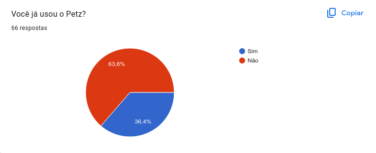
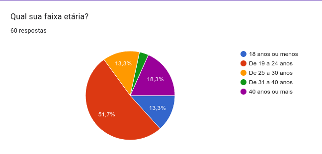
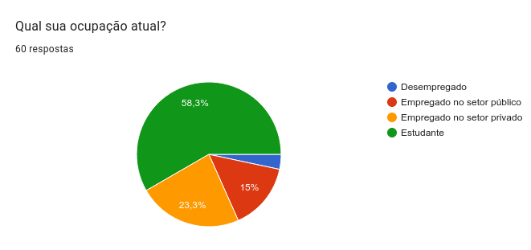
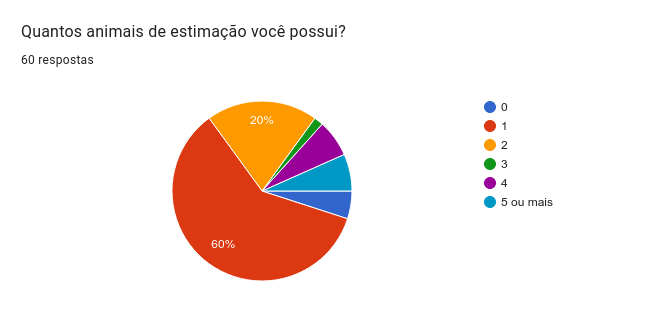
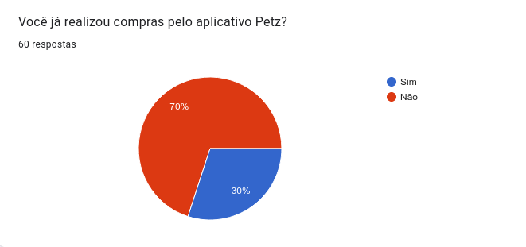
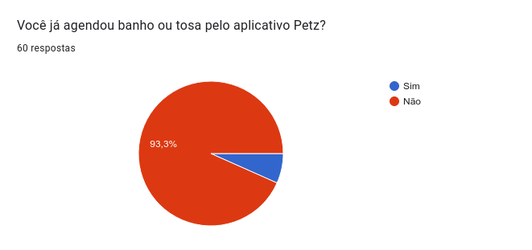
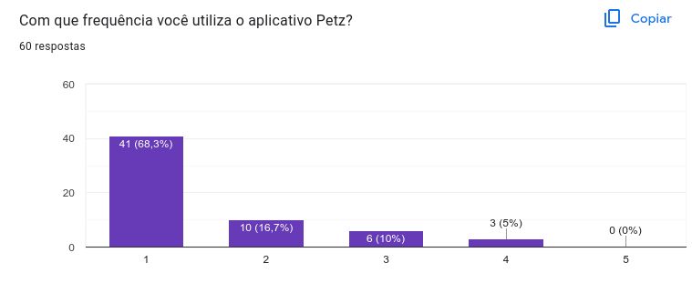
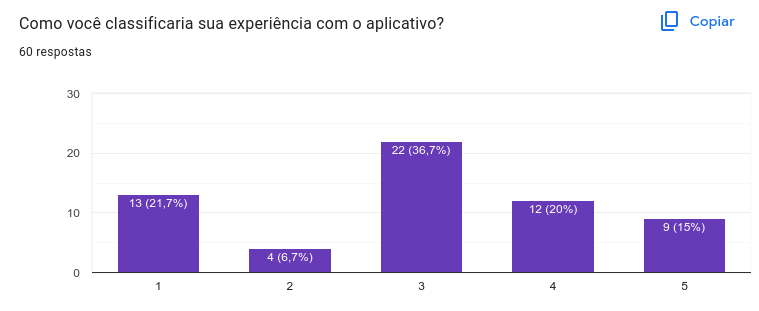
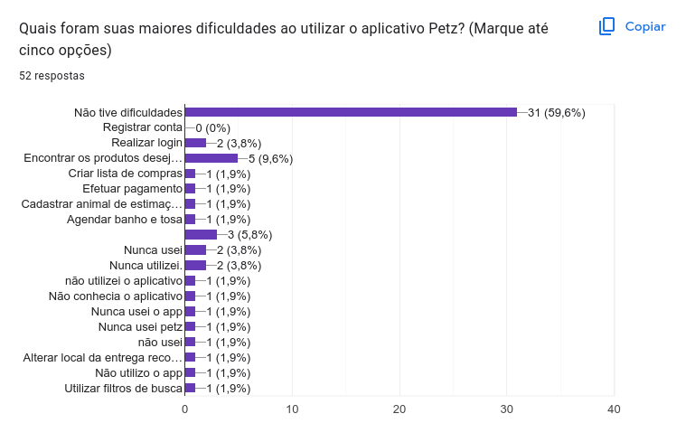
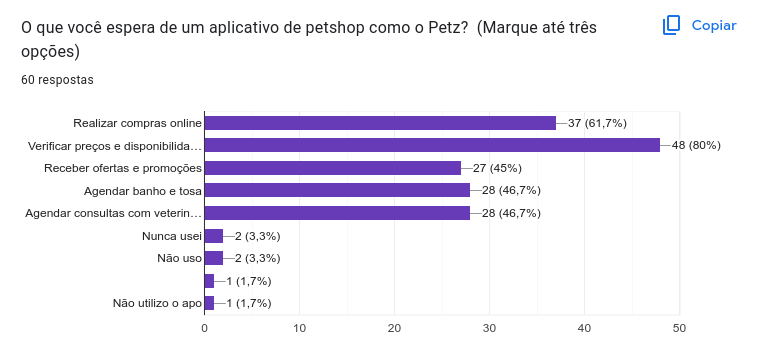

Questionário
1. Introdução
O questionário é uma técnica que permite obter informações de um numeroso público-alvo de forma rápida. Tal técnica possibilita analisar as resposta de uma amostra da população. Assim, a análise das respostas do questionário auxiliam a definir entender o público alvo.
2. Metodologia
Para a coleta de dados, foi utilizado a plataforma Google Forms. Foram criadas perguntas a fim de entender os usuários e potenciais usuários do aplicativo Petz. Dessa forma, as perguntas realizadas têm dois objetivos: Feedback do funcionamento do aplicativo e obtenção de dados sobre o perfil dos usuários.
Foram aplicadas duas condições para tratativa dos dados obtidos pelas respostas do questionário. É necessário que a resposta da questão 1 seja positiva ou que possua algum pet.
Questionário aplicado no grupo de Engenharia de Software do Telegram e grupos familiares e de instituições que os integrantes do grupo participam. O intervalo de data que o questionário ficou disponível foi de 27/04/2023 até 29/04/2023.
3. Questões
- Você já usou o Petz? (sim/não)
- Qual sua faixa etária? (até 18, 19-24, 25-30, 30-40, 40 ou mais)
- Qual sua ocupação atual? (Desempregado, Empregado do setor público, Empregado do setor privado, Estudante)
- Quantos animais de estimação você possui? (0,1,2,3,4, 5 ou mais)
- Você já realizou compras pelo aplicativo Petz? (sim/não)
- Você já agendou banho ou tosa pelo aplicativo Petz? (sim/não)
- Com que frequência você utiliza o aplicativo Petz? (1,2,3,4,5)[Nunca utilizo o aplicativo / Utilizo com muita frequência]
- Como você classificaria sua experiência com o aplicativo? [insatisfeito / muito satisfeito]
- Quais foram suas maiores dificuldades ao utilizar o aplicativo Petz? (Marque até cinco opções)
- O que você espera de um aplicativo de petshop como o Petz? (Marque até três opções)
4. Respostas
4.1 Questão 1
A Figura abaixo descreve as respostas para a questão "Você já usou o Petz?". Os dados estão representados através de um gráfico de pizza.

Figura 1: Respostas para a questão 1
Fonte: Autor, 2023
4.2 Questão 2
A Figura abaixo descreve as respostas para a questão "Qual sua faixa etária?". Os dados estão representados através de um gráfico de pizza.

Figura 2: Respostas para a questão 2
Fonte: Autor, 2023
4.3 Questão 3
A Figura abaixo descreve as respostas para a questão "Qual sua ocupação atual?". Os dados estão representados através de um gráfico de pizza.

Figura 3: Respostas para a questão 3
Fonte: Autor, 2023
4.4 Questão 4
A Figura abaixo descreve as respostas para a questão "Quantos animais de estimação você possui?". Os dados estão representados através de um gráfico de pizza.

Figura 4: Respostas para a questão 4
Fonte: Autor, 2023
4.5 Questão 5
A Figura abaixo descreve as respostas para a questão "Você já realizou compras pelo aplicativo Petz?". Os dados estão representados através de um gráfico de pizza.

Figura 5: Respostas para a questão 5
Fonte: Autor, 2023
4.6 Questão 6
A Figura abaixo descreve as respostas para a questão "Você já agendou banho ou tosa pelo aplicativo Petz?". Os dados estão representados através de um gráfico de pizza.

Figura 6: Respostas para a questão 6
Fonte: Autor, 2023
4.7 Questão 7
A Figura abaixo descreve as respostas para a questão "Com que frequência você utiliza o aplicativo Petz?". Os dados estão representados através de um gráfico de barras verticais.

Figura 7: Respostas para a questão 7
Fonte: Autor, 2023
4.8 Questão 8
A Figura abaixo descreve as respostas para a questão "Como você classificaria sua experiência com o aplicativo?". Os dados estão representados através de um gráfico de barras verticais.

Figura 8: Respostas para a questão 8
Fonte: Autor, 2023
4.9 Questão 9
A Figura abaixo descreve as respostas para a questão "Quais foram suas maiores dificuldades ao utilizar o aplicativo Petz?". Os dados estão representados através de um gráfico de barras horizontais.

Figura 6: Respostas para a questão 9
Fonte: Autor, 2023
4.10 Questão 10
A Figura abaixo descreve as respostas para a questão "O que você espera de um aplicativo de petshop como o Petz?". Os dados estão representados através de um gráfico de barras horizontais.

Figura 10: Respostas para a questão 10
Fonte: Autor, 2023
5. Tabela de respostas
A Tabela 1 detalha as respostas recolhidas de usuários que tiveram experiências anteriores com o aplicativo já implementado.
| Faixa etária | Ocupação | Número de Pets | Já realizou compras pelo app | Já agendou banho ou tosa pelo app | Frequência de uso do app | Classificação da experiência com o app | Maiores dificuldades ao usar o app | O que esperar de um app como Petz |
|---|---|---|---|---|---|---|---|---|
| De 19 a 24 anos | Estudante | 1 | Sim | Não | 2 | 5 | Não tive dificuldades | Realizar compras online, Verificar preços e disponibilidade de produtos, Agendar consultas com veterinários |
| De 25 a 30 anos | Estudante | 2 | Sim | Não | 1 | 5 | Não tive dificuldades | Realizar compras online, Verificar preços e disponibilidade de produtos, Receber ofertas e promoções |
| De 19 a 24 anos | Estudante | 5 ou mais | Não | Não | 2 | 3 | Não tive dificuldades | Realizar compras online, Verificar preços e disponibilidade de produtos |
| 40 anos ou mais | Estudante | 1 | Sim | Não | 3 | 4 | Encontrar os produtos desejados | Verificar preços e disponibilidade de produtos |
| 18 anos ou menos | Estudante | 2 | Sim | Não | 3 | 4 | Não tive dificuldades | Realizar compras online, Receber ofertas e promoções |
| 40 anos ou mais | Empregado no setor público | 4 | Não | Sim | 1 | 3 | Não tive dificuldades | Verificar preços e disponibilidade de produtos |
| 40 anos ou mais | Estudante | 1 | Não | Não | 1 | 5 | Verificar preços e disponibilidade de produtos, Receber ofertas e promoções, Agendar consultas com veterinários | |
| De 19 a 24 anos | Empregado no setor privado | 0 | Sim | Não | 2 | 4 | Não tive dificuldades | Realizar compras online, Verificar preços e disponibilidade de produtos, Receber ofertas e promoções |
| De 19 a 24 anos | Estudante | 1 | Sim | Não | 3 | 5 | Não tive dificuldades | Realizar compras online, Verificar preços e disponibilidade de produtos, Receber ofertas e promoções, Agendar banho e tosa, Agendar consultas com veterinários |
| De 19 a 24 anos | Estudante | 1 | Sim | Não | 2 | 4 | Não tive dificuldades | Encontrar os produtos desejados Realizar compras online, Verificar preços e disponibilidade de produtos |
| 40 anos ou mais | Empregado no setor privado | 1 | Não | Sim | 1 | 2 | Não tive dificuldades | Verificar preços e disponibilidade de produtos, Receber ofertas e promoções, Agendar banho e tosa, Agendar consultas com veterinários |
| 40 anos ou mais | Empregado no setor privado | 1 | Não | Não | 1 | 2 | Não tive dificuldades | Verificar preços e disponibilidade de produtos, Receber ofertas e promoções |
| De 19 a 24 anos | Estudante | 5 ou mais | Sim | Não | 4 | 5 | Não tive dificuldades | Realizar compras online, Verificar preços e disponibilidade de produtos, Receber ofertas e promoções |
| De 19 a 24 anos | Estudante | 2 | Sim | Não | 2 | 2 | Efetuar pagamento, Cadastrar animal de estimação | Realizar compras online, Receber ofertas e promoções, Agendar banho e tosa |
| De 19 a 24 anos | Estudante | 1 | Sim | Não | 1 | 4 | Não tive dificuldades | Realizar compras online, Verificar preços e disponibilidade de produtos, Agendar consultas com veterinários |
| 18 anos ou menos | Estudante | 0 | Sim | Não | 2 | 4 | Não tive dificuldades | Realizar compras online, Agendar banho e tosa, Agendar consultas com veterinários |
| De 19 a 24 anos | Estudante | 1 | Não | Não | 2 | 4 | Não tive dificuldades | Realizar compras online, Verificar preços e disponibilidade de produtos, Receber ofertas e promoções, Agendar banho e tosa, Agendar consultas com veterinários |
| De 25 a 30 anos | Estudante | 1 | Sim | Não | 3 | 4 | Realizar login, Criar lista de compras | Verificar preços e disponibilidade de produtos |
| De 19 a 24 anos | Estudante | 1 | Sim | Não | 2 | 5 | Não tive dificuldades | Realizar compras online, Verificar preços e disponibilidade de produtos, Receber ofertas e promoções |
| De 19 a 24 anos | Empregado no setor privado | 2 | Sim | Não | 4 | 4 | Alterar local da entrega recorrente | Realizar compras online, Verificar preços e disponibilidade de produtos, Receber ofertas e promoções |
| De 25 a 30 anos | Empregado no setor privado | 2 | Sim | Não | 3 | 4 | Encontrar os produtos desejados | |
| De 19 a 24 anos | Estudante | 1 | Sim | Não | 2 | 5 | Não tive dificuldades | Realizar compras online, Verificar preços e disponibilidade de produtos, Receber ofertas e promoções, Agendar banho e tosa, Agendar consultas com veterinários |
| De 31 a 40 anos | Empregado no setor público | 2 | Sim | Sim | 3 | 3 | Agendar banho e tosa | Realizar compras online, Verificar preços e disponibilidade de produtos, Agendar banho e tosa |
| De 19 a 24 anos | Estudante | 3 | Sim | Sim | 4 | 3 | Utilizar filtros de busca | Realizar compras online, Verificar preços e disponibilidade de produtos, Agendar banho e tosa |
Tabela 1: Respostas de usuários ao questionário
Fonte: Autor, 2023
6. Análise
Levando em consideração o ambiente de aplicação do questionário, é possível compreender que os usuários são em sua maioria estão na faixa etária de 18 até 25 anos, possuem 1 animal de estimação, já realizaram compras pelo aplicativo e nunca agendaram banho ou tosa pelo aplicativo. Além disso, a maioria das respostas teve boa experiência com o aplicativo.
Conforme a tabela acima e com base nos dados coletados, os usuários de aplicativos buscam se manter informados sobre preços e promoções de produtos, além de buscarem serviços como consultas veterinárias e banho e tosa de seus pets.
Observação: Algumas pessoas se confundiram as perguntas sobre o aplicativo Petz com a Loja física Petz. Contudo, é possível observar alguns padrões dos donos de pet na pesquisa.
7. Requisitos
A Tabela 2 detalha os requisitos que foram elicitados a partir das respostas ao questionário submetido.
Legenda:
- QST - Questionário
- RF - Requisito Funcional
- RNF - Requisito Não Funcional
| ID | Requisito | Tipo |
|---|---|---|
| QST01 | O usuário deve ser capaz de se cadastrar na aplicação. | RF |
| QST02 | O usuário deve ser capaz de cadastrar mais de um animal de estimação na aplicação. | RF |
| QST03 | O usuário deve ser capaz de filtrar produtos. | RF |
| QST04 | O usuário deve ser capaz de buscar produtos. | RF |
| QST05 | O usuário deve ser capaz de criar lista de compras. | RF |
| QST06 | O usuário deve ser capaz de editar lista de compras. | RF |
| QST07 | O usuário deve ser capaz de comprar produtos adicionados a lista de compras. | RF |
| QST08 | O usuário deve ser capaz de alterar local de entrega do produto. | RF |
| QST09 | O usuário deve ser capaz de verificar preço e disponibilidade do produto. | RF |
| QST10 | O usuário deve ser capaz de agendar banho e tosa. | RF |
| QST11 | O usuário deve ser capaz de reportar falhas e erros. | RF |
| QST12 | O sistema deve ser capaz de informar sobre promoções e descontos. | RF |
| QST13 | O sistema deve ser capaz de manter seguro as informações do usuário. | RNF |
Tabela 2: Requisitos elicitados
Fonte: Autor, 2023
8. Bibliografia
[1] VAZQUEZ, Carlos; SIMÕES, Guilherme. Engenharia de Requisitos: Software Orientado ao Negócio. Brasport, 10 de agosto de 2016.
9. Histórico de versão
| Versão | Data | Descrição | Autor(es) | Revisor(es) |
|---|---|---|---|---|
1.0 |
27/04/23 | Criação da versão inicial do questionário | Samuel Sato | Magno Luiz |
1.1 |
29/04/23 | Adição de dados sobre as respostas | Samuel Sato | Magno Luiz |
1.2 |
30/04/23 | Padronização de legendas | Pedro Muniz | Felipe Corrêa |